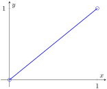
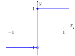

Section 4.4 Continuous Functions on Intervals
The basic properties from the previous section show that continuity is preserved under many algebraic operations. When the domain is an interval, continuity also has strong global consequences. On a closed and bounded interval, a continuous function must stay bounded and must attain its largest and smallest values. On any interval, a continuous function cannot jump over intermediate values. These results are among the first indications that continuity is not merely a local condition.
Subsection 4.4.1 Extreme Value Theorem
Let \(S \subseteq \R\) and let \(f \colon S \to \R\text{.}\) We say that \(f\) attains an absolute maximum on \(S\) at \(c \in S\) if \(f(x) \le f(c)\) for every \(x \in S\text{.}\) Likewise, \(f\) attains an absolute minimum on \(S\) at \(c\) if \(f(c) \le f(x)\) for every \(x \in S\text{.}\) A function need not attain either one on an arbitrary domain, even if it is continuous. Closed and bounded intervals are special because limits of sequences in such intervals cannot escape the interval.
Proof.
For any \(c \lt a\text{,}\) let \(r=(a-c)/2\text{.}\) Then \((c-r,c+r)
\subseteq (-\infty,a)\text{,}\) which is disjoint from \([a,b]\text{.}\) So \(c\) is not a cluster point of \([a,b]\text{.}\) The case \(c \gt
b\) is similar, using \(r=(c-b)/2\text{.}\) Therefore every cluster point of \([a,b]\) must lie in \([a,b]\text{.}\)
Proposition 4.4.2.
Every continuous function on a closed bounded interval is bounded.
Proof.
Let \(f \colon [a,b] \to \R\) be continuous. Suppose \(f\) is not bounded. Then for every \(n \in \N\) there exists \(x_n \in [a,b]\) such that
\begin{equation*}
|f(x_n)| \gt n.
\end{equation*}
Since \([a,b]\) is bounded, Theorem 2.3.2 gives a convergent subsequence \((x_{n_k})\text{.}\) Let \(x_{n_k} \to c\text{.}\) By Proposition 4.4.1, \(c \in [a,b]\text{.}\) Since \(f\) is continuous at \(c\text{,}\) Proposition 4.3.1 gives \(f(x_{n_k}) \to f(c)\text{.}\) Hence \((f(x_{n_k}))\) is convergent, so it is bounded. But \(|f(x_{n_k})| \gt n_k \ge k\) for every \(k\text{,}\) which is impossible. Therefore \(f\) is bounded.
Example 4.4.3.
Both hypotheses in Proposition 4.4.2 are necessary.
-
The function \(f(x)=1/x\) on \((0,1]\) is continuous, but it is not bounded because \(f(x) \to +\infty\) as \(x \to 0^+\text{.}\)
-
The function\begin{equation*} g(x)=\begin{cases} 0 & \text{if } x=0,\\ 1/x & \text{if } 0 \lt x \le 1 \end{cases} \end{equation*}is defined on the closed bounded interval \([0,1]\text{,}\) but it is not continuous at \(0\) and it is not bounded.
Theorem 4.4.4. Extreme Value Theorem.
A continuous function on a closed bounded interval attains an absolute maximum and an absolute minimum.
Proof.
Let \(f\) be continuous on a closed bounded interval \([a,b]\text{.}\) Then \(J:=f([a,b])\) is nonempty and, by Proposition 4.4.2, is also bounded. So \(M:=\sup J\)exists. By Exercise 2.5.9, there is a sequence \((y_n)\) in \(J\) that converges to \(M\text{.}\) For each \(n\text{,}\) pick \(x_n \in [a,b]\) with \(f(x_n)=y_n\text{.}\)
Since \([a,b]\) is bounded, the Bolzano-Weierstrass theorem Theorem 2.3.2 yields a convergent subsequence \((x_{n_k})\) of \((x_n)\text{.}\) Again Proposition 4.4.1 implies the limit of this subsequence, say \(c\text{,}\) belongs to \([a,b]\text{.}\) Consequently, \(f\) is continuous at \(c\) and
\begin{equation*}
f(x_{n_k}) \to f(c)
\end{equation*}
according to the sequential characterization of continuity Proposition 4.3.1. As a subsequence of \((y_n)\text{,}\) \(f(x_{n_k})=y_{n_k}\) must converge to \(M\) as well. So by uniqueness of limits \(f(c)=M\text{.}\) Thus, \(f\) attains its absolute maximum.
Applying the same argument to \(-f\text{,}\) we see that \(-f\) attains its absolute maximum at some point \(d \in [a,b]\text{.}\) Then \(f(d)\) is the absolute minimum of \(f\) on \([a,b]\text{.}\)
Example 4.4.5.
The conclusion of the extreme value theorem can fail if the interval is not closed. The identity function \(f(x)=x\) on \((0,1)\) is continuous and bounded, but it has neither an absolute maximum nor an absolute minimum on \((0,1)\text{.}\)

Subsection 4.4.2 Intermediate Value Theorem
The extreme value theorem says that a continuous function on \([a,b]\) cannot avoid its largest and smallest values. The next theorem says more: between any two values it takes, it must also take every intermediate value. Geometrically, the graph of a continuous function on an interval cannot jump across a horizontal line.
Proposition 4.4.7. Bolzano’s Theorem.
Let \(f \colon [a,b] \to \R\) be continuous. If \(f(a)\) and \(f(b)\) are of opposite signs, then there exists \(c \in (a,b)\) such that \(f(c)=0\text{.}\)
Proof.
After replacing \(f\) by \(-f\) if necessary, we may assume \(f(a) \lt 0 \lt f(b)\text{.}\) Let
\begin{equation*}
S=\{x \in [a,b] : f(x) \lt 0\}.
\end{equation*}
Then \(a \in S\text{,}\) and \(b\) is an upper bound of \(S\text{.}\) So \(c:=\sup S\) exists. Since \(a \in S \subseteq [a,b]\text{,}\) we have \(c \in [a,b]\text{.}\)
We claim that \(f(c)=0\text{.}\) Suppose first that \(f(c) \lt 0\text{.}\) Then \(c \lt b\text{,}\) since \(f(b) \gt 0\text{.}\) Choose a sequence \((x_n)\) in \((c,b)\) such that \(x_n \to c\text{.}\) By continuity of \(f\) at \(c\text{,}\) we have \(f(x_n) \to f(c) \lt 0\text{.}\) Hence \(f(x_n) \lt 0\) for all sufficiently large \(n\text{.}\) For such \(n\text{,}\) we have \(x_n \in S\) and \(x_n \gt c\text{,}\) contradicting the fact that \(c\) is an upper bound of \(S\text{.}\)
Now suppose that \(f(c) \gt 0\text{.}\) Then \(a \lt c\text{.}\) For each \(n \in \N\text{,}\) let \(m_n=c-(c-a)/2^n\text{.}\) Then \(m_n \lt c=\sup S\text{,}\) so \(m_n\) is not an upper bound of \(S\text{.}\) Therefore there exists \(x_n \in S\) such that \(m_n \lt x_n \le c\text{.}\) Since \(m_n \to c\) and \(m_n \lt x_n \le c\) for every \(n\text{,}\) the squeeze lemma gives \(x_n \to c\text{.}\) By continuity, \(f(x_n) \to f(c) \gt 0\text{,}\) so \(f(x_n) \gt 0\) for all sufficiently large \(n\text{.}\) But each \(x_n \in S\text{,}\) so \(f(x_n) \lt 0\) for every \(n\text{,}\) a contradiction.
Therefore \(f(c)=0\text{.}\) Since \(f(a) \lt 0\) and \(f(b) \gt 0\text{,}\) we have \(c \neq a\) and \(c \neq b\text{.}\) Hence \(c \in (a,b)\text{.}\)
Theorem 4.4.8. Intermediate Value Theorem.
Let \(f \colon [a,b] \to \R\) be continuous, and let \(\gamma\) be a real number between \(f(a)\) and \(f(b)\text{.}\) Then there exists \(c \in [a,b]\) such that
\begin{equation*}
f(c)=\gamma.
\end{equation*}
Proof.
Consider the function \(g(x)=f(x)-\gamma\text{.}\) Then \(g\) is continuous on \([a,b]\text{.}\) If \(\gamma=f(a)\) or \(\gamma=f(b)\text{,}\) then we are done. Otherwise \(\gamma\) lies strictly between \(f(a)\) and \(f(b)\text{,}\) so \(g(a)\) and \(g(b)\) have opposite signs. Hence Proposition 4.4.7 gives a point \(c \in (a,b)\) such that \(g(c)=0\text{.}\) Therefore \(f(c)=\gamma\text{.}\)
Example 4.4.9.
The equation \(x^3+x-1=0\) has a solution in \((0,1)\text{.}\) Indeed, the polynomial \(p(x)=x^3+x-1\) is continuous, while \(p(0)=-1\) and \(p(1)=1\text{.}\) By Proposition 4.4.7, there exists \(c \in (0,1)\) such that \(p(c)=0\text{.}\)
Example 4.4.10.
Continuity is essential in the intermediate value theorem. Define
\begin{equation*}
f(x)=\begin{cases}
-1 & \text{if } x \lt 0,\\
1 & \text{if } x \ge 0.
\end{cases}
\end{equation*}
Then \(f(-1)=-1\) and \(f(1)=1\text{,}\) but there is no \(c \in [-1,1]\) with \(f(c)=0\text{.}\)

Corollary 4.4.12.
The image of an interval under a continuous function is an interval.
Proof.
Let \(I \subseteq \R\) be an interval, and let \(f \colon I \to \R\) be continuous. To show that \(f(I)\) is an interval, let \(\alpha,\beta \in f(I)\) with \(\alpha \lt \beta\text{,}\) and let \(\gamma\) satisfy \(\alpha \lt \gamma \lt \beta\text{.}\) Choose \(x_1,x_2 \in I\) such that \(f(x_1)=\alpha\) and \(f(x_2)=\beta\text{.}\) Since \(I\) is an interval, the closed interval between \(x_1\) and \(x_2\) is contained in \(I\text{.}\) Applying Theorem 4.4.8 to the restriction of \(f\) to that closed interval, we obtain \(c \in I\) such that \(f(c)=\gamma\text{.}\) Thus \(\gamma \in f(I)\text{,}\) so \(f(I)\) is an interval.
Corollary 4.4.13.
The image of a closed bounded interval under a continuous function is a closed bounded interval.
Proof.
Let \(f \colon [a,b] \to \R\) be continuous. By Corollary 4.4.12, \(f([a,b])\) is an interval. By Theorem 4.4.4, \(f\) attains its absolute minimum \(m\) and absolute maximum \(M\) on \([a,b]\text{.}\) Hence \(f([a,b]) \subseteq [m,M]\text{.}\) Since \(f([a,b])\) is an interval containing \(m\) and \(M\text{,}\) it also contains every number between them. Therefore \([m,M] \subseteq f([a,b])\text{,}\) and so
\begin{equation*}
f([a,b])=[m,M].
\end{equation*}
The last corollary is a first glimpse of a more general theorem from topology: continuous images of compact sets are compact. For subsets of \(\R\text{,}\) compactness is the same as being closed and bounded, so the corollary above is exactly the one-dimensional case of that general principle.
Proposition 4.4.14.
If \(f\) is injective and continuous on an interval \(I\text{,}\) then the inverse of \(f \colon I \to f(I)\) is also continuous.
Proof.
Clearly, we can assume \(I\) is non-degenerated (i.e. has at least two points). Let \(g \colon f(I) \to I\) be the inverse of \(f\text{.}\) We argue that \(g\) is continuous at an arbitrary point \(y_0 \in f(I)\text{.}\) Let \((y_n)\) be a sequence in \(f(I)\) that converges to \(y_0\text{.}\) Set \(x_n=g(y_n)\) and \(x_0=g(y_0)\text{.}\) We must show that \(x_n \to x_0\text{.}\)
Suppose, to the contrary, that \(x_n\) does not converge to \(x_0\text{.}\) Then there exists \(\varepsilon \gt 0\) such that infinitely many terms of the sequence \((x_n)\) lie outside the interval \(I_0 := (x_0-\varepsilon, x_0+\varepsilon) \cap I\text{.}\) Passing to a subsequence, we may assume that \(x_{n_k} \notin I_0\) for every \(k\text{.}\) Since \(x_0\) is a point of a non-degenerated interval, it is a cluster point of \(I\text{,}\) and hence \(I_0\) is also non-degenerated. By Corollary 4.4.12, \(f(I_0)\) is an interval containing \(y_0\text{;}\) it is also non-degenerated because \(f\) is injective. Therefore there exists \(\delta \gt 0\) such that
\begin{equation*}
(y_0-\delta,y_0+\delta)\cap f(I) \subseteq f(I_0).
\end{equation*}
But \(y_{n_k}=f(x_{n_k})\) and \(x_{n_k} \notin I_0\text{,}\) so \(y_{n_k} \notin f(I_0)\) for every \(k\text{.}\) On the other hand, since \(y_{n_k} \to y_0\) and each \(y_{n_k}\) lies in \(f(I)\text{,}\) we have \(y_{n_k} \in f(I_0)\) for all sufficiently large \(k\text{,}\) a contradiction.